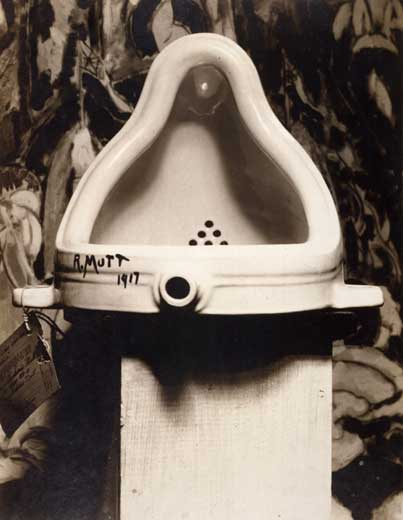

Henry Darger: Gerçeküstünün gerçeklikleri
Henry Darger benim küçük saplantılarımdan biri. Dramatik bir giriş yapmak gerekirse… (Hülyalı ses tonu. Check) Her şey yaklaşık dokuz sene önce Chicago’da yaşayan bir arkadaşım bizlere tarihin en absürt kurban bayramı kartpostallarını göndermeye karar verdiğinde başlar. Kendisi yörenin sanat galerilerinden aparttığı resim kataloglarını kesip kartonlara yapıştırarak hayata geçirdiği İsa’lı, koyunlu ve bol vahşetli muhteşem tasarımlarıyla ebeveynlerimizi inme riskiyle erken yaşta tanıştırmış oldu. “Deliliğin Dağları”nı aratmayan resimlerden en felaketi herhalde bana düşmüştü. Sulu boya resmin ana teması periye benzeyen küçük kızlar ve bunlara işkence eden garip adamlardı. Ama renkler ve ortam daha önce gördüğüm hiçbir şeye benzemiyordu. Resmin altında sadece sanatçının ismi yazıyordu: Henry Darger
O zamanlar avant garde, post modern, ve anarşist her şeyin önünde hayranlıkla eğilen sanatsal çakrası ultra mor seviyesinde gezinenlerden değildim.
Kısaca özetlemek gerekirse: Marcel Duchamps’a 2004 yılında 20. Yüzyılın en unutulmaz sanat eseri ödülünü kazandıran Fountain’ı karşısında Stendhal Sendromundan sanrılara kapılacağımı hiç sanmıyorum. (Sendromlara meraklıysanız bkz: Stendhal Sendromu)
-Yok Dadaist akımının anti rasyonelliğini en şahane şekilde betimleyen esermişte zart zurt. Aynen ne kadar sallarsan salla dona düşer son damla hesabı… Kendi halini ne kadar süslersen süsle ters dönmüş bir pisuvara hayranlıkla bakan bir alıktan fazlası olamazdın bana göre. Yine aynı şekilde Damien Hirst’in 100 milyon dolara kasnaklamayı başardığı “Snoop Doggy Dog’tan çalıntı kurukafaya” 5 kuruş bile vereceğimi sanmıyorum. (Belki üstüne işeyip Marcel Duchamp’a satmaya çalışabilirdim.)
Fakat Caravaggio veya Hieronymus Bosch dersen akan sular dururdu. Bana göre işte sanat buydu. Anlayacağınız 21 yaşımın baharında bendeniz sanat dünyasını bir kaç yüzyıl geriden takip etmeyi tercih ediyor ve bırakın post -modernizmi, modernizme bile lanet okuyan bir kafayla pek çok sanat aşığı arkadaşımı hayattan bezdiriyordum. Olmayan derinlik ve perspektif duygumla resim öğretmenleri derslerde beni ciddi olarak intihar etmekle tehdit ederlerdi. İşte görsel sanatları takdir etme boyutlarım henüz böyle garip semalarda gezerken bizim Darger’a tek kartpostalla vurulunca derhal beyzadenin peşine düşmeye karar verdim. Nihayet birileri benim cyborg misali bünyemin radyoaktif enerjili keman yaylarını titretmeyi başarmıştı. Kartpostalı gönderen arkadaşımın söylediğine göre Darger yerel bir sanatçıymış. Bu haberi alınca beni bir telaş sardı ki görmeyin. Adamla tanışmak için yollara düşmeye hazırdım. Fakat 1 hafta sonra bizimki telefonla aradı. Mesaj kısa ve netti. “Kızım hiç boşuna uğraşma. Adam öleli kaç yıl olmuş. Bunları hep öldükten sonra bulmuşlar. Deliymiş herif resmen. Zaten bir tek ev sahibi tanıyor adamı. İki tane de kitap bulmuşlar. Herif 50 sene aynı odada 30000 sayfa kitap yazmış. O sana gönderdiğim resim gibi yüzlerce resmi var bazıları bir buçuk metreden daha büyük.”
Bunları duyduktan sonra moralim biraz bozuldu. Arkadaşı tekrar işe koşmaya çalıştım ama ne yazık ki kendisi tam o sıralarda “Amerikan College” gençliğinin neredeyse tamamının yaşadığı –geleneksel psychedelics+ beerpong= sorority girls ve korunmasız seks– dönemine girdi. Darger , Merger hepsi yalan oldu. 97 yılından başlayarak (İnternet keşif yılım) girdiğim aramalarda istediğim ayrıntıları bir türlü bulamadım. En kötüsü 2001’de o güzelim kartpostalı taşınırken kaybettim. Darger böylece yavaş yavaş hafızamın kuytularına kaçtı. Henry’i kimselerin bilmediği unutulmuş bir yaşlı ihtiyar zannettim.
Sanal dünya genişledikçe hayatıyla ilgili pek çok parçayı farklı yerlerden topladım. Henry’i tanıdıktan sonra çizdiği her şey ve yazdıkları bambaşka bir anlam kazanmıştı.
Neredeyse tüm hayatını kiraladığı küçük bir odada geçiren Darger sadece ibadet etmek ve hademe olarak çalıştığı hastaneye gitmek için yuvasından çıkardı. Çevresiyle neredeyse hiç iletişim kurmadığı için 50 yıl boyunca o odada ne halt ettiğini kimse tam olarak anlayamadı. Kimileri Henry’nin günde en fazla üç dürt saat uyuduğunu söylüyor. Asla yatağında uyumazmış, hep masa başında uyurmuş. (Nereden biliyorlarsa.) Fakat Darger ölüm döşeğindeyken odasını temizlemek için yukarı çıkan ev sahibi hayatının sürpriziyle karşılaşacaktı. Belki de dünyanın en uzun romanı olabilecek 15000 sayfa uzunluğunda bir roman, boyu 3.5 metreyi bulan dev resimler, 13000 sayfalık bir otobiyografi, Son 50 yılın tüm meteorolojik tarihini tutan ve kasırgaların izini süren 4000 sayfalık bir hava durumu günlüğü. (Proust şu anda hasetten mezarında ters dönüyordur.) 20. yüzyılın en epik eserlerinden birisi bir sürü çöpün arasında bulunmuştur. “Zamanın Ruhu” diye işte buna derler.
Henry'nin odası (Günlerce temizlendikten sonra.)
Sanat dünyasını çekişmeden çekişmeye sürükleyecek “Outsider Art” ın en önemli temsilcisi Darger efsanesi işte o anda doğuvermişti. Bu tarz bir hikayenin iki farklı açıklaması olabilir:
1-Darger sıradan obsesif bir deliydi. Hiç bir sanatsal yeteneği olmayan sadece acemi çizimler ve taslaklar arasında çürüyüp gitmiş bir hayattı.
2- O bir dahiydi.
Acıların çocuğu: The original One
What do you say? I’m being a saint? Ha Ha! I am one and a very sorry saint I am …
Henry Darger.
Dargerism akımının öncüsü Henry Darger 1892 yılında Chicago’da dünyaya geldiğinde Amerika pek parti ve eğlence döneminde sayılmazdı. Büyük Buhran’ın hemen öncesinde halk yoksulluğun pençesinde kıvranıyordu. O zamanların siyah beyaz fotoğraflarını ya da yakın zamanın müstesna dizilerinden Carnival’ı seyrettiyseniz ne demek istediğimi anlarsınız. Ortamı bir fotoyla özetlemek gerekirse:
Özgürlük ve demokrasinin beşiğinde 20. yüzyılın başında yine aşşağıda sunacağım manzaralar olağan aile aktivitileri olarak kabul ediliyordu. Pazar kahvaltısı, parkta yürüyüş, kilisede ayine katılma ve bol kanlı bir linç. Sonrada panayıra mı uğruyorlardı? Resimdeki bayanlar kahve içip dedikodu yapmak için toplandıklarında acaba aralarında nasıl sohbetler geçiyordu?
“Şekerim geçen bizimki linç partisine bir kıyafetle geldi. Böyle sakillik görmedim. Vallahi tüm Missisipiye reklam olduk.”

3 milyon evsiz, tren yollarında yitip giden sefalet içindeki aileler ve kıtlık yüzünden yemek kuyruklarında bekleyip duran binlerce insan. İşte tüm bu karamsarlığın ve fakirliğin arasında tamda duruma uygun olarak Darger mütevazi bir hayata adım atıyor. 4 yaşındayken annesi kızkardeşini doğururken ölünce maddi durumu o sırada iyice kötüye giden baba Darger yeni doğmuş kızkardeşini evlatlık vermeye karar veriyor. Henry yıllarca kız kardeşinee kavuşmayı hayal ederken biryandan da yanlışlıkla onunla karşılaşıp sevişmekten korktuğu için hayatı boyunca hiç bir kadına yaklaşamayacaktı. 4 yaşında babasının ona aldığı çocuk kitaplarından okumayı öğrenen Darger çocukluğunu böylece belirsizlik içinde bir hayal dünyasında geçiriyordu. Sakatlandıktan sonra eski terzilik işini yapamayan babası için alışveriş yapıyor, ayakaltında durmuyor ve zaman zaman kız kardeşini ve annesini özlüyordu.
8 yaşına kadar babasıyla bir şekilde hayatta kalmayı başaran Darger’a 1900 yılında yetimhane yolları görünüyor. Hasta ve bakıma muhtaç babası ölmek için St. Augistine fakirler evine yatıyor. Yıllar sonra Henry aynı şekilde bir yaşlılar evinde sessiz sedasız buradan göçüp gidecektir.
Darger ilk defa diğerlerinden “ayrıksı” olduğunu bu yıllarda fark ediyor. Çocukken kontrolsüzce garip sesler çıkaran Henry sürekli dersleri böldüğünü otobiyografisinde uzun uzun anlatmış. Şimdilerde Darger’ın bir tür erken tourette sendromunun belirtilerini gösterdiği düşünülüyor. Otobiyografisinde Henry çocukların onun çıkardığı bu seslere gülüp, eğlenip onu seveceklerini zannetiğini yazıyor. Ama çocuklar çoğu zaman acımasızdır. Alaylara ve şiddete maruz kalan Henry hep yanında taşıdığı sopasıyla kendini savunmaya kalkınca başı iyice belaya girer. Henry hayatını anlattığı 13000 sayfalık otobiyografisinde o günü anlatır:
“Çocuklar topluca bana saldırdı ve bende korunmak için elimdeki sopayı savurdum. Olaydan sonra öğretmenim benim suçlu olduğumu söyledi. Çünkü diğer çocukların tamamı normaldi. Ben ise… bir gariptim. Daha sonra beni bir doktora göstermeye karar verdiler. Bana “Sadece muayene edileceksin.” dediler ama ben gerçeği biliyordum. Bu doktor benim akılsız olup olmadığıma bakacaktı. Beni bir süre inceledikten sonra kararını verdi ve bana söylediği şey çok kafamı karıştırdı. Doktorun söylediğine göre kalbim doğru yerde değilmiş. Ama peki nerede olmalıydı kalbim? Karnımda mı? Eğer beni cehenneme göndereceklerini bilseydim onları asla affetmezdim.”

Dönemin diğer fena özürlüler okulu. Son durak:Laconia. Yüzeye çıkan bu resimler akıl hastanelerinde ciddi bir reformu başlattı
Kısa bir muayeneden sonra Henry hızla şimdilerde Louisina State School olarak bilinen özürlüler yurduna postalandı. 1900’lü yıllarda Amerikan akıl hastanelerinin durumu hiç iç açıcı sayılmazdı. Neredeyse öjenik bir vahşetle pek çok insan sistemde sonsuza dek yitip gitmiştir. Ailesinin besleyemediği çocuklarıla birlikte , sağırlar, içine kapanıklar, kekemeler, kocalarını memnun edemeyen lobotomiye muhtaç kadınlar… hepsinin son durağı Lousiana State School veya benzeri enstitülerdi. Yani 1900’lü yıllarda Amerika’da delirmek oldukça cesaret isterdi. O yıllardan kalan başka bir okulun hatıralarına bakınca Henry’i bu okulda pek güzel günlerin beklemediği aşikardır. Binaların fotoğraflarına baktığım anda kendimi Sanitarium oyununda zannediverdim. Peşimdede Silent Hill’den hemşireler.. Kısaca o yıllarda kendinizi bir akıl hastanesinde bulduğunuzda yapılacak en mantıklı şey; doktorlar yapmadan önce buz kıracağını bir şekilde gözçukurunuza geçirmek.
Biraz Oliwer Twist, biraz Kunta Kinte karışımı bir cehennem olan bu ortamda çok kısa bir süre kaldıktan sonra bizimki devletin onların sırtından para kazandığını anlamıştır. Sabahın en erken saatinden güneş batana kadar tarlalarda her türlü ağır işte çalışan çocuklar sıkı disiplin altında karanlık barakalarda yaşam mücadelesi veriyordu. Lobotomi ve hücre cezaları olağan şeyler sayılıyordu. Henry defalarca kaçmaya çalışacak ve defalarca yakalanacaktı. Sevdiği ve doğduğu şehir Şikago’dan uzaklarda İllinois’teki bu yaşamdan nefret edip her kaçışında bir kaç kilometre sonra atlı bekçiler tarafından yakalanıp iplerle sürüklenerek Lousiana’ya geri getirilmiştir. Lousiana State School bu enstitüler arasında en kötü şöhretlilerden birisi olarak kabul edilir. Hakkında pek çok idari soruşturma açılmış ve nihayetinde kapatılmış olan bu kurumda yüzlerce şüpheli ölüm meydana gelmiştir. Bunların bir kısmı kanı donduracak ihmalkarlık ve insanlık dışı örneklerdir. Örneğin özürlü bir çocuk banyoda kaynar suyla haşlanarak ölmüştür. O sırada yanında olması gereken bakıcı ise ortalıkta yoktur. Henry burada geçirdiği her günün ölüm olabileceğini anladığında son olarak bir gece vakti yurttan kaçar. Otobiyografisinde yazdığına göre aylarca yarı aç yolları takip ederek Louisiana’dan Şikago’ya kadar yürümüştür. 17 yaşına basan genç Henry burada bir Katolik hastanesinde hademe olarak iş bulur. Ölene dek aynı hastanede hademelik yapmaya devam edecektir.
Henry’nin küçük odasında yazmaya ve resme erken yaşlarda başladığı düşünülüyor. Henry her gün işe gidiyor düzenli olarak Pazar ayinine katılıp komünyon alıyordu. Sadece tek bir arkadaşı olduğu söyleniyor. Arkadaşı William Shloder’la istismar edilmiş çocuklara yardım etmeyi amaçlayan bir dernek kurmaya karar verirler. Henry kendisinden zorla koparılan kız kardeşini hiç unutamaz ve belkide bu yüzden hayatı boyunca büyümeyen bir çocuk olarak kalır.
The Ultimate Story
“We were 8 and 9 and we began to love life. The world is ours and for our freedom we have to shoot it into pieces.”
Kitabın kahramanları Vivian Kızları’ndan inciler
Henry hikayelerin hikayesini yazmaya karar verdiğinde yıllar sürecek bir maceraya atılacağını belki kendisi bile bilmiyordu. 15000 sayfalık bu dev romanın fitilini ateşleyen en önemli ayrıntı Chicago Daily News gazetesinde 9 Mayıs 1911 tarihinde basılan küçücük bir klasik 3. sayfa haberiydi. Küçük Elsie Paroubek sokağın karşısında oturan teyzesini ziyaret edeceğini söyleyerek evden çıkar ve kendisinden bir daha haber alınamaz. Yaklaşık bir ay sonra küçük kızın boğazlanmış cesedi bulunur.
Henry'nin yıllarca sakladığı kupür: Elsie
Küçük çocuklara yapılan işkencelerle erken yaşta akıl hastanesinde tanışan Darger Elsie’nin resmini daima dolabında saklar. Hikayenin orijinal adı The Story of the Vivian Girls, in What is Known as the Realms of the Unreal, of the Glandeco-Angelinian War Storm Caused by the Child Slave Rebellion’ dur. Adından nasıl bir uzunlukta olacağı bellidir. Hikaye Vivian kızları olarak bilinen 7 küçük kızın oldukça karanlık maceralarını anlatır. Çocukları köle olarak satan kötü kalpli Glendelinian ordusuna karşı savaşan Abenian halkının destansı hikayesi her ayrıntının hesap edildiği bir labirente benzer daha çok.
Sayıları 500’ü aşan her bir savaşın, işkencenin ve ihanetin tasvirleriyle beraber Darger beyninin dehlizlerine hayat vermek için resimler çizmeye başladığında hikaye çoktan epik boyutuna varmıştı. Resim konusunda hiç bir eğitim almayan Darger akla hayale gelmeyecek yöntemlerle kendini eğitmeyi başarır.
Kasap kağıtlarını birbirine yapıştırarak oluşturduğu kağıtlara 1.5 metrelik dev resimler çizer. Bunu yaparken kolaj sanatının inceliklerini keşfeder. Savaşlar için klasik marşlara farklı sözler yazıp özgün marşlar hazırlar. Orduların kostümlerini tasarlar,tek tek tüm generallerin ayrıntılı biyografisini yazar. (Resim ekle, müzik ekle, kes-böl-parçala. Darger kendi wordpress’ini kendi yaratmış resmen.)
Ama trajik bir şekilde ölen küçük bir kızın tüm bunlarla ne ilgisi olabilir? Yıllar önce tek bir uzman Henry’nin küçük kızın katili olabileceğini iddia etti. Darger’ın çocuklara karşı hastalıklı duygular beslediğini düşünenler var ama bunlar şehir efsanesinden öteye geçmemiş. Onu tanıyan bir avuç insanın Henry’nin büyük küçük hiç kimseyle iletişim kurmayan bir münzevi olduğunu söylemesi bu iddiaları yalanlar nitelikte. O dönem onunla aynı binada yaşayan çocuklarda Henry’i kendi kendine konuşup, kendi dünyasında yaşayan bir adam olarak hatırlıyorlar. Günümüzde Darger pek çok prestijli müzede kendi özel odasına sahiptir ve Dargerism akımının yaratıcısı, “outsider art” ın en önemli figürü olarak kendisine tapılır. Hikayenin tamamını merak edenler için Jessica Yu’nun 2004 yapımı şahane belgeseli:“Henry Darger: In the Realms of the Unreal”. Sizleri yasa dışı yollara sevk etmek istemem ama İnternet’ten (öhöm) bir şekilde belgesele ulaşabilirsiniz.
İşte trailer


{kind=link}
{kind=link}
{kind=link}
{kind=link}
{kind=link}
{kind=link}
{kind=link}
çok güzel bir yazı olmuş. bu kadar az kaynak varken bu konuyu paylaşmanız gerçekten önemli.
şahsen ben bilmediğim bir çok şey öğrendim hem kavramsal hem de henry darger’ın ilginç hayat hikayesi hakkında
teşekkürler.
çok yararlı bir yazı, tebrik ediyorum…
Yazıyı okuduktan sonra aklıma birisi takıldı. Yıllar önce, küçüklüğümde, babamın yanında çalıştığım matbaaya yaşlı bir adam gelirdi. Elinde yerden topladığı takvim yaprakları ve kağıt çöpler olurdu. Babam sırf duasını almak adına bu takvim yapraklarını birbirine zımbalamamı isterdi ama ben sadece o adama olan saygımdan yapardım bunu. Çöp topladığını düşünüyordum başlarda, çevreyi temiz tutmaya çalıştığını sanıyordum. Farklı olduğunu biliyordum ama neden böyle olduğunu bilmiyordum. Her Perşembe günü gelir ve bir daha görünmezdi. Kim bilir evinde kaç bin sayfa takvim yaprağı vardı. Onları tek tek okuduğunu ve kutsalmışçasına özenle topladığını düşünmek içimde garip bir heyecan uyandırıyor. Hala yaşıyor mu acaba, bilmiyorum.
çok etkilendim ;özellikle o elsie hikayesini okuduktan sonra fotoğrafı görünce.o küpür saklanmasa bu olay hakkında şu an yaşayan herhangi biri bu olay hakkında bilgi sahibi olabilir miydi diye düşünmeden edemiyor insan. bazı kavramlar veya akımlar hakkında okurken düşünmek de gayet güzel ve faydalı.insanın dibinden su sızdıran ve sürekli dolan bir bardak gibi hissetmesine sebep olan bir yazı olmuş açıkçası.tebrikler